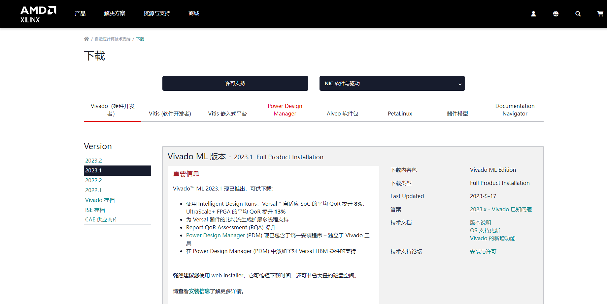
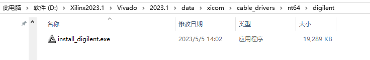
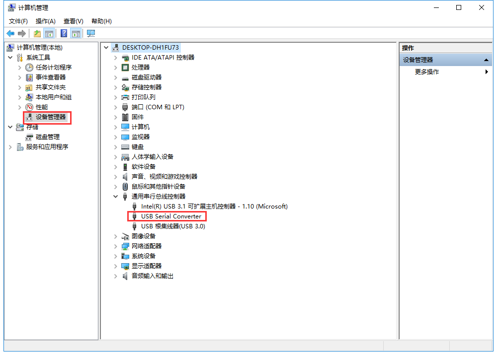

Vivado开发环境¶
Vivado软件介绍¶
一提起Xilinx的开发环境，人们总是先会想起ISE，而对Vivado不甚了解。其实，Vivado是Xilinx公司于2012推出的新一代集成设计 环境。虽然目前其流行度并不高，但可以说Vivado代表了未来Xilinx FPGA开发环境的变化趋势。所以，作为一个Xilinx FPGA的开发使用者，学习掌握Vivado是趋势，也是必然。作为开发者，首先肯定有以下疑惑：既然已经有ISE存在了，为何Xilinx公司又花大力气去搞什么Vivado呢？在Vivado Design Suite User Guide : Getting Started(UG910)中提到，推出Vivado是为了提高设计者的效率，它能显著增加Xilinx的28nm工艺的可编程逻辑器件的设计、综合与 实现效率。可以推测，随着FPGA进入28nm时代，ISE工具似乎就有些“不合时宜”了，硬件提升了，软件不提升的话，设计效率必然受影响。正是出于这 一考虑，Xilinx公司于2008年开始便筹划推出新一代的软件开发环境，经历10年时间打造出了Vivado工具这一巅峰之作。
Vivado软件版本¶
Vivado的软件版本在不断的升级中，到目前为止最新的软件版本已经是2023.2了。因为ZYNQ开发板的所有例程和教程我们都在Vivado 2023.1的开发环境中完成。为了避免软件版本版本的原因而导致一些无法解释的问题，还是希望大家学习过程中与我们保持同步。用户使用之前需要安装Vivado 2023.1的软件。因为Vivado软件比较大，我们没有提供光盘安装文件，只提供下载链接，另外用户也可以到Xilinx的官网下载，官网下载需要注册相关账号。
Vivado软件的Xilinx官方下载地址：http://china.xilinx.com/support/download.html
{kind=link}
Vivado提供了Linux版和Windows版，还提供二合一版本，我们这里使用二合一版本，既能满足Windows开发又能满足Linux开发，Vivado要求操作系统必须是64位。
Vivado软件Windows下安装¶
下载解压Vivado软件压缩包，直接点击xsetup.exe，进入安装，不过为了更好的安装，请关闭杀毒软件，各种电脑管家，电脑用户名不要有中文，和空格
{kind=link}
{kind=link}
如果提示版本更新，我们忽略更新，点击“Continue”
点击“next”进行安装，可以看到Vivado对系统要求
{kind=link}
选择需要安装的产品，如果不需要使用Vitis（取代之前的Vitis）则仅选Vivado，一般Vivado是ZYNQ或者带有处理器硬核的芯片会用到，如果是纯FPGA硬件且自己不学习软件相关，则选择Vivado
{kind=link}
这里选择安装的器件库，由于我们不需要UltraScale、UltraScale+和versal芯片，可以取消勾选，节省安装空间，其他保持默认，点击“next”
{kind=link}
选中“I agree”，点击“next”
{kind=link}
安装路径这里没有修改，安装路径不能有中文、空格等特殊字符，同时电脑的用户名不要是中文、带空格的名称。可以看到Vivado对硬盘大小的要求，至少要有190G。
{kind=link}
点击“Install”安装
{kind=link}
等待安装，时间较长，如果没有关闭杀毒软件和电脑管家，安装过程可能会被拦截，导致安装软件后不能使用
{kind=link}
提示安装成功
{kind=link}
安装License文件，点击“Copy License”，选择“xilinx_ise_vivado.lic”文件。
{kind=link}
可以看到安装成功
{kind=link}
重新安装驱动¶
一般安装vivado时，都会安装下载器驱动。如果需要再次安装下载器驱动，进入vivado安装路径“X:\XXX\Vivado\2023.1\data\xicom\cable_drivers\nt64\digilent”下，双击“install_digilent.exe”文件安装，安装前先关闭vivado软件，如果vivado识别不到下载器，请尝试关闭防火墙，杀毒软件，也不能同时打开多个版本的vivado、ise。
{kind=link}
安装完成后，连接下载器，打开设备管理器，在通用串行总线控制器里找到USB Serial Converter，说明安装成功
{kind=link}
ZYNQ-7000开发平台 FPGA教程 - Alinx官方网站